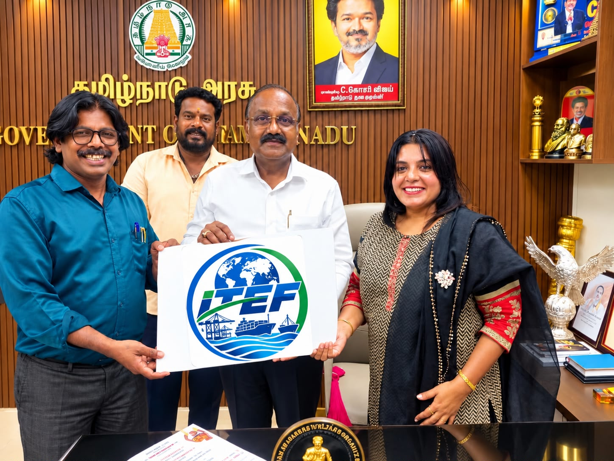
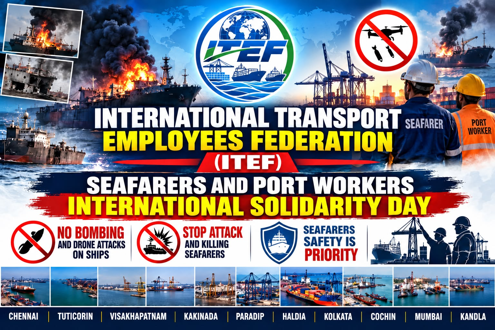

Our Vision
A maritime industry where every seafarer is treated with dignity, protected from exploitation and supported in times of need.
International Transport Employees Federation
A prestigious platform uniting seafarer's welfare organisations, maritime charities, trade unions, and partner institutions to champion the rights, welfare, safety, and dignity of maritime and transport workers.
Seafarers are essential to international trade and the global economy. Yet many continue to face serious challenges, including abandonment, unpaid wages, unfair employment practices, unsafe working conditions, contractual disputes, difficulties with repatriation and inadequate access to welfare assistance.
ITEF seeks to encourage international cooperation and collective action to address these challenges, strengthen the voices of seafarers and promote fair, humane and responsible practices throughout the maritime industry.
A maritime industry where every seafarer is treated with dignity, protected from exploitation and supported in times of need.
To unite welfare organisations, trade unions, maritime charities and other stakeholders in advancing seafarers' rights, social protection, fair employment and international solidarity.
About ITEF
The International Transport Employees Federation (ITEF) is bringing together organisations working for the welfare, rights, safety and professional interests of seafarers and transport employees.
The maritime industry operates internationally, but the challenges faced by seafarers frequently require cooperation between countries, ports, welfare organisations, trade unions, shipowners, maritime administrations and other relevant stakeholders.
ITEF aims to create a collaborative platform through which participating organisations can exchange information, raise concerns, coordinate appropriate assistance and advocate for better working and living conditions for seafarers and maritime transport workers.

Every seafarer deserves respect, fair treatment and protection from exploitation.
Cooperation across countries and organisations is essential to addressing challenges that extend beyond national boundaries.
Employment practices should respect applicable laws, contractual obligations and internationally recognised labour standards.
The physical safety, mental well-being and social welfare of seafarers must remain central priorities.
Seafarers' Rights & Welfare
Seafarers work far from their families and communities, often under demanding conditions and with limited access to immediate assistance. Protecting their rights and welfare requires sustained cooperation, effective support systems and responsible action from all stakeholders.
ITEF seeks to promote awareness of seafarers' rights and encourage coordinated responses to the difficulties faced by maritime workers.

Seafarer abandonment can involve failure to provide repatriation, outstanding wages or essential support. ITEF aims to encourage coordination with relevant welfare organisations, maritime authorities, unions and other competent bodies to help affected seafarers seek appropriate assistance.
Delayed or withheld wages can cause severe financial hardship for seafarers and their families. ITEF seeks to promote awareness, responsible engagement and access to appropriate complaint, conciliation and legal channels.
Safe working conditions, suitable equipment, proper training, emergency preparedness and effective reporting mechanisms are essential to protecting seafarers' lives and health.
Seafarers should have access to transparent employment terms, clear contracts, fair recruitment practices and protection against unlawful exploitation and recruitment-related abuses.
When seafarers become stranded, abandoned or unable to return home, timely coordination between relevant authorities and support organisations can be critical.
Isolation, prolonged periods at sea, employment uncertainty and emergencies can affect seafarers' mental well-being and families. ITEF seeks to encourage greater awareness, compassionate support and access to appropriate welfare resources.
Our Objectives
The proposed objectives of the International Transport Employees Federation include:
Promote respect for seafarers' rights under applicable national laws, employment contracts and relevant international maritime labour standards.
Encourage cooperation to identify cases of seafarer abandonment and facilitate appropriate assistance through competent authorities and welfare partners.
Advocate for fair resolution of wage disputes and encourage access to lawful complaint, conciliation and dispute-resolution mechanisms.
Promote transparent recruitment, fair employment contracts, responsible crewing practices and protection against exploitation.
Support awareness and advocacy concerning occupational safety, accident prevention, emergency response and safe working conditions.
Encourage access to welfare facilities, counselling, medical assistance, family support and repatriation resources through appropriate partners.
Build constructive relationships among welfare organisations, trade unions, maritime charities and other stakeholders in different countries.
Explore appropriate forms of collective advocacy, dialogue and representation for participating organisations and the workers they serve, subject to applicable laws and authorisations.
Encourage opportunities for professional development, maritime education and fair access to employment.
Highlight seafarers' contributions to global trade and bring attention to the challenges affecting their lives and livelihoods.
Promote dialogue with shipowners, ship managers, recruitment agencies, maritime administrations, port authorities and other relevant stakeholders.
Explore joint programmes, memoranda of understanding and collaborative initiatives that advance the federation's mission.
Member Organisations
ITEF aims to bring together organisations committed to the rights, welfare, safety and dignity of seafarers and transport employees.
Participating organisations may be invited to explore cooperation in welfare assistance, information exchange, advocacy, awareness programmes, training and other mutually agreed initiatives, subject to ITEF's governing arrangements and applicable laws.
Interested in becoming part of ITEF? Visit the Join ITEF section to express your organisation's interest in participating in this proposed international initiative.
Join ITEF
ITEF invites expressions of interest from eligible welfare organisations, trade unions, maritime charities and other institutions that share its commitment to protecting seafarers and transport employees.
By exploring cooperation through a common international platform, participating organisations may help amplify workers' concerns, exchange knowledge, identify opportunities for collaboration and promote fairer working conditions.
Interested organisations may propose collaboration in:
Together, we can work towards a maritime and transport sector where every worker is treated fairly, safely and with dignity. Express your interest
Contact ITEF
ITEF welcomes enquiries from organisations, trade unions, maritime charities, seafarers and other stakeholders interested in its proposed objectives and international cooperation initiatives.